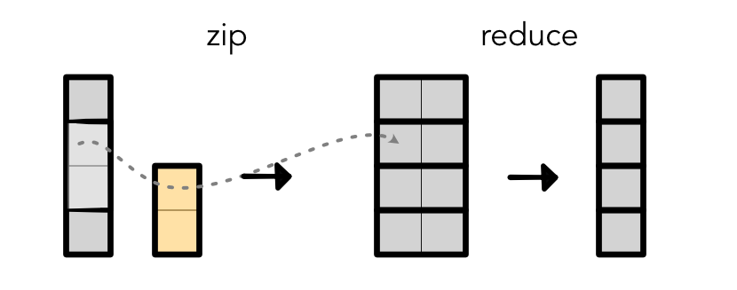

Machine Learning Engineering
Lecture 22
Convolution + Pooling
Module 4
Lecture
Outline
Review: Convolution
2D+ Convolution
Pooling
Intuition
Same neural network as before
Brute force, try running it everywhere
Hope it finds useful features at some locations
Convolution Forward

Computation
Output Values
output[0] = weight[0] * input[0] + weight[1] * input[1] + weight[2] * input[2]
output[1] = weight[0] * input[1] + weight[1] * input[2] + weight[2] * input[3]
output[2] = weight[0] * input[2] + weight[1] * input[3] + weight[2] * input[4]Alternative View
Alternative View
Unroll and Zip
input = minitorch.tensor([1, 2, 3, 4, 5, 6])
input = unroll(input, K)
print(input)
[[1, 2, 3],
[2, 3, 4],
[3, 4, 5],
[4, 5, 6],
[5, 6, 0],
[6, 0, 0],
]Our Convention
Input and Output same width
A bit non-standard, but easier to code
Conv Back - Input
Reverse the convolutional anchor

Channels
Each position may have multiple values
These may be meaningful - i.e. color channels
These may be learned - i.e. hidden states
Key Points
Convolution is a Linear applied to all channels in position
If weight is length K and there are 10 channels, the input to the linear is 10 * K.
Output channels are just like the output of the Linear.
Graphical Representation

Lecture Quiz
Two Dimensional Convolution
Instead of line, now use box
Box is anchored at the top-left
Zip-reduce is over full box!
Convolution

Conventions
Sizes
# Input image - batch x in_channel x height x width
# Weight - out_channel x in_channel x kernel_height x kernel_width
# Output image - batch x out_channel x height x widthAlternative View
One step -> mat mul
Code
output[b, oc, h, w] = sum([weight[oc, ic, kh, kw] * input[b, ic, h + kh, w + kw]
for ic, kh, kw in ...])
# Input image - batch x (in_channel * height * width)
# Weight - (in_channel * kernel_height * kernel_width) x out_channelBackward

Backward
Same idea as 1D
Reverse weight (bottom-top, left-right)
Anchor bottom-right
Compute convolution
Channels
Nothing different from 1D version

Implementation
All about understanding sizes.
Should be similar to matmul, start with output
If outside boundaries, use 0
Advice
Implement 1D first it is easier
Compute a couple manually yourself.
All about indexing
Where are we?
3D Convolution?
Yeah!
Several neat versions
3D Convolution Voxels

3D Convolution Chemistry

3D Convolution Video

Graph Convolution